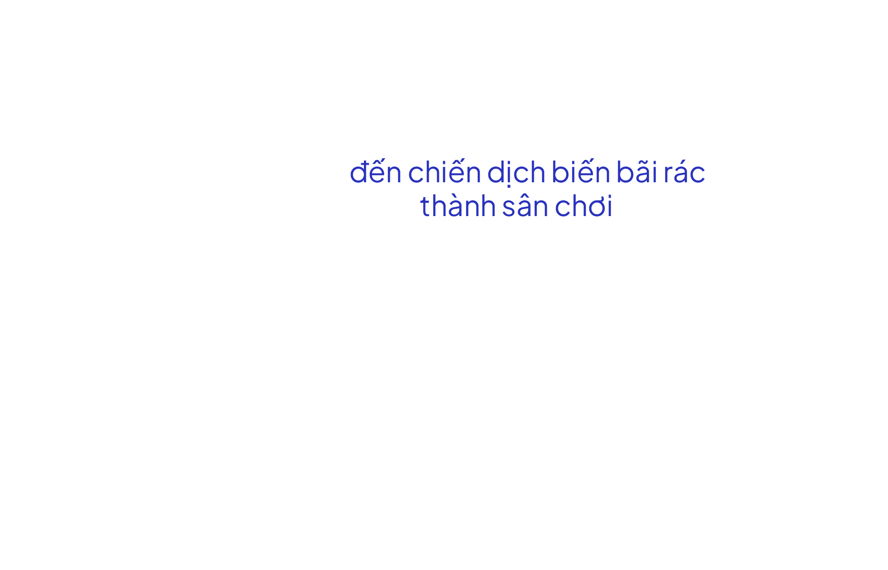
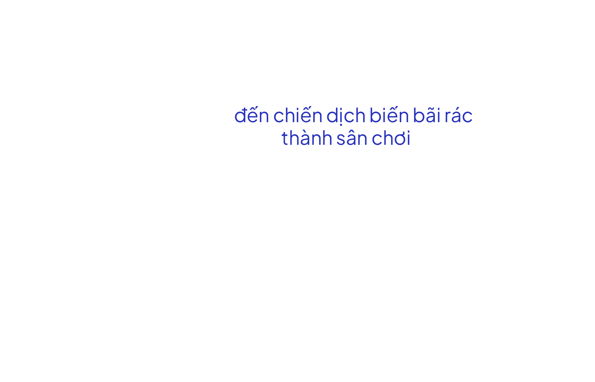

HiGreen – thử thách chạy bộ quy đổi số km thành tiền
để biến các bãi rác thành sân chơi sinh thái là một bước đi của MB
nhằm cụ thể hóa cam kết ngân hàng xanh.

Hơn mười năm nay, bà Lê Thị Thao (tổ 1, phường Phúc Tân) luôn phải tìm cách ngăn mùi hôi thối, ruồi nhặng và khói bụi từ bãi rác sau nhà. Trường hợp của nhà bà Thao không phải cá biệt mà là tình trạng chung của hàng chục hộ dân ở tổ 1, phường Phúc Tân, quận Hoàn Kiếm. Bên cạnh khu dân cư chưa đến 50.000 mét vuông là bãi rác lộ thiên rộng trên 1.000 mét vuông. “Mùa nắng thì mùi hôi thối, mùa mưa nước ngập, rác dềnh lên trôi khắp đường, trôi cả vào nhà rất mất vệ sinh”, bà Thao nói.
Bao quanh bốn phía là rác, hai cháu của bà Thao gần như không có không gian vui chơi khi ở nhà. “Chúng tôi là dân lao động, không có nhiều thời gian và điều kiện để đưa các cháu đi chơi xa. Nhìn bọn trẻ quẩn quanh trong bốn bức tường, hít thở không khí bẩn thỉu rất thương và lo cho sức khỏe, nhưng vẫn phải chấp nhận sống chung”, bà Thao nói.
Theo thống kê từ Vụ Năng lượng tái tạo (tổng cục Năng lượng - Bộ Công Thương), trong năm 2022, Việt Nam thải trung bình 35.000 tấn chất thải rắn sinh hoạt đô thị và 34.000 tấn chất thải sinh hoạt nông thôn mỗi ngày, chưa kể lượng rác thải nông nghiệp từ cây trồng, chế biến nông - lâm - thủy sản... đều là tài nguyên.
Trên địa bàn Hà Nội nhiều bãi rác thải tự phát mọc lên ngay trên các tuyến đường, ngõ ngách, thậm chí giữa các khu đô thị, gây ô nhiễm môi trường, ảnh hưởng đến cảnh quan và không gian sinh hoạt của người dân. Xử lý rác thải không hiệu quả là nguyên nhân chính khiến môi trường bị hủy hoại, sức khỏe con người và nền kinh tế bị đe dọa.

Nhận thức được vấn đề này, ngân hàng TMCP Quân đội - MB đã phối hợp cùng các doanh nghiệp xã hội, chính quyền các địa phương thực hiện chiến dịch cải tạo các bãi rác thành sân chơi cộng đồng mang tên HiGreen – Bình minh xanh. Theo ông Phạm Như Ánh - Tổng Giám đốc Ngân hàng TMCP Quân đội, HiGreen là trụ cột quan trọng của chiến lược ESG (viết tắt của môi trường, xã hội và quản trị doanh nghiệp) mà nhà băng này bắt đầu theo đuổi từ 2023. Theo đó, các hoạt động sẽ triển khai theo hướng gắn với cộng đồng, lan tỏa từ cán bộ nhân viên đến 23 triệu khách hàng và đối tác, chung tay giải quyết các bài toán môi trường, hướng đến sự phát triển bền vững.
Khởi nguồn từ phong trào chạy bộ Beerace, liên hệ với ý tưởng biến bãi rác thành công viên Sodokwon tại Hàn Quốc và mong muốn của chủ tịch UBND thành phố Hà Nội Trần Sỹ Thanh: biến bãi rác Nam Sơn thành công viên, HiGreen đã được hình thành nhân kỷ niệm sinh nhật tuổi 29 của MB.
“Ban lãnh đạo tập đoàn đánh giá đây là phương án khả thi nhất trong tất cả các phương án được đưa ra thảo luận, có thể truyền cảm hứng, bám sát chiến lược ESG, đồng thời góp phần cải tạo môi trường và mang lại không gian vui chơi, rèn luyện sức khoẻ cho cư dân thành thị - bộ phận chịu tác động rất lớn từ biến đổi khí hậu, rác thải và bụi mịn”, ông Vũ Thành Trung - Thành viên Ban điều hành MB nói.
Không chỉ là hoạt động nội bộ, lần này chiến dịch tổ chức với quy mô lớn hơn trên nền tảng thể thao trực tuyến vRace. Theo đó, với một km VĐV hoàn thành được ghi nhận trên hệ thống, MB sẽ đối ứng 3.000 đồng. “Chúng tôi kỳ vọng một nền tảng có tệp runner lớn như vRace và cộng đồng runner của VnExpress Marathon sẽ giúp MB lan tỏa mạnh mẽ chiến dịch đến cộng đồng yêu thể thao trong và ngoài nước”, ông Trung cho hay.

Chiến dịch này đồng thời được triển khai trên app Thiện Nguyện - ứng dụng do ngân hàng TMCP Quân đội phát triển, mục đích kết nối giữa cá nhân, tổ chức gây quỹ với cộng đồng, lan tỏa tinh thần thiện nguyện đến với mọi người. “Trước đó, ứng dụng này đã triển khai trên 3.000 chiến dịch, thu hút 1 triệu người tham gia, gây quỹ được khởi tạo với số tổng số tiền ủng hộ qua nền tảng lên đến hơn 400 tỷ đồng. Vì vậy chúng tôi cũng hoàn toàn có cơ sở để lan tỏa HiGreen trên app Thiện Nguyện”, đại diện BTC nói.
Kết quả, toàn bộ chiến dịch thu hút hơn 30.000 runner tham gia, trong đó có những người trước đây chưa từng hoàn thành 1 km. Chị Lê Thanh Hằng (quận Thanh Xuân, Hà Nội) là một điển hình. Hơn 70 ngày diễn ra chiến dịch, đều đặn 4h30 mỗi ngày, chị thức dậy, vệ sinh cá nhân và ra khỏi nhà đi chạy. Hà Nội vào đông, sáng sớm trời lạnh hơn chị vẫn duy trì hoạt động này.
Trước nay chị nghĩ bản thân không thể chạy bộ vì gặp vấn đề ở đầu gối, nhưng kể từ ngày cùng cơ quan hưởng ứng chiến dịch HiGreen, nữ nhân viên ngân hàng tham khảo ý kiến bác sĩ. Ban đầu chị đi bộ với tốc độ phù hợp. Thấy cơ thể phản ứng tích cực, sức khỏe thể chất và tinh thần tốt lên, nữ runner tăng dần cự ly và tốc độ. Sau hơn hai tháng, chị tích lũy được gần 400 km.
"Không phải để đạt KPI hay ganh đua thành tích, tôi chạy đều đặn mỗi ngày cho chính sức khỏe của mình và để ủng hộ cộng đồng. Không có nhiều vật chất để làm thiện nguyện như các tỷ phú, triệu phú, tôi ủng hộ bằng cách chạy", chị Hằng nói. Không chạy một mình, người thân, bạn bè khi thấy chị đi chạy và chia sẻ hình ảnh lên trang cá nhân, nhiều người vào hỏi thăm và đăng ký theo.
Ngoài chị Hằng, thử thách HiGreen còn ghi nhận nhiều runner khác hoạt động tích cực. Trong số đó phải kể đến chân chạy Đào Bá Tuân. Anh tham gia thử thách, chạy 21km mỗi ngày, hướng đến mục tiêu trở thành người Việt Nam đầu tiên thực hiện liên tục 365 cuộc chạy half marathon.
Bên cạnh sự tham gia của các cá nhân, giải còn thu hút nhiều đội, nhóm trong và ngoài MB. Ba sự kiện offline lớn diễn ra trong các ngày 4/11, 12/11, 25/11 năm 2023 ở ba miền Bắc, Trung, Nam và 20 sự kiện nhỏ đã thu hút hàng nghìn VĐV. “100% cán bộ, nhân viên cả nước đã hưởng ứng thử thách. Nhưng điều chúng tôi xúc động hơn là những nhóm ngoài MB đã chung sức, góp bước chạy để xây dựng một xã hội khỏe mạnh và phát triển bền vững”, ông Tạ Quốc Đan - Chủ nhiệm chính trị, Đảng ủy Ngân hàng nói.
Một số nhóm ngoài MB đông thành viên có thể kể đến là Superman Night Run, FPT Runner, HUMG Runner & Friend, một số thành viên CLB Hồ Lộn (Hà Nội) cũng đã ủng hộ hàng trăm nghìn km cho chiến dịch.
Theo thống kê của SocialHeat, YouNetMedia, HiGreen thuộc top 5 chiến dịch thể thao thiện nguyện được thảo luận nhiều nhất trên mạng xã hội từ tháng 11/2023.
Chính vì sự lan tỏa đó, sau hơn hai tháng, 30.000 runner đã hoàn thành quãng đường gần 3 triệu km, đóng góp tương đương 8,1 tỷ đồng, vượt mục tiêu đề ra. Toàn bộ số tiền đối ứng được tài trợ cho các tổ chức xã hội, cải tạo các bãi rác tự phát, không gian công cộng đang bị bỏ phí thành khu vui chơi sinh thái cho trẻ em và người dân địa phương.
“Chúng tôi muốn biến sức chạy thành cỗ máy xử lý rác thải khổng lồ và xây dựng được những sân chơi sinh thái cho trẻ em và cư dân thành phố”, ông Quốc Đan nói.
Song hành cùng hàng triệu bước chân là bàn tay và khối óc của các chuyên gia, kỹ sư và công nhân. Đến tháng 1/2024, sân chơi đầu tiên đã hình thành tại tổ 1, phường Phúc Tân, quận Hoàn Kiếm, thành phố Hà Nội.
Bàn về việc chọn Phúc Tân làm địa điểm đầu tiên của chuỗi dự án, ban tổ chức cho biết, sau khi tham vấn ý kiến của nhiều chuyên gia, nhận thấy hiện trạng sinh thái khu vực bờ vở, quận Hoàn Kiếm có nhiều tiềm năng để làm giàu, xúc tiến tái sinh tự nhiên với hơn 200 loài thực vật và hơn 140 loài chim hoang dã. Tuy nhiên, quá trình đô thị hóa và ý thức của một bộ phận người dân đã hủy hoại khu vực này, biến nó thành bãi rác lộ thiên.
Một số nhóm ngoài MB đông thành viên có thể kể đến là Superman Night Run, FPT Runner, HUMG Runner & Friend, một số thành viên CLB Hồ Lộn (Hà Nội) cũng đã ủng hộ hàng trăm nghìn km cho chiến dịch.
Theo chuyên gia sinh thái Nguyễn Hoàng Hào, Viện Điều tra Quy hoạch rừng, các giá trị sinh thái này mang lại lợi ích rất lớn cho cộng đồng địa phương và môi trường của toàn thành phố. Cùng với đó là các lợi ích khác về giáo dục, du lịch. “Chúng tôi nhận thấy, nơi đây có tiềm năng để tạo ra sản phẩm dịch vụ sinh thái độc đáo ngay trong nội đô nên đã chọn Phúc Tân để đặt nền móng”, BTC cho hay.
Công trình ở Phúc Tân lấy ý tưởng từ hình ảnh Rồng Vàng – linh vật của năm mới Giáp Thìn 2024. Đồng thời nó dựa trên mong muốn của người dân tổ 1 là có một không gian vui chơi vừa đáp ứng đủ công năng cho người lớn, trẻ em, cộng đồng người yếu thế nhưng vẫn mang đậm nét văn hóa truyền thống.
Là đơn vị tư vấn thiết kế tổng thể, anh Nguyễn Tiêu Quốc Đạt, giám đốc sáng tạo của Think playgrounds chia sẻ, trẻ em thành phố nói chung thiệt thòi khi thiếu không gian vui thân thiện, hài hoà với thiên nhiên. Điều đó phần nào ảnh hưởng đến sự phát triển toàn diện của trẻ. “Think playgrounds cũng từng bước thúc đẩy đa dạng sinh học trong đô thị thông qua việc thiết kế các không gian đa năng bền vững. Sau hơn 240 sân chơi công cộng trên toàn quốc, đây là một trong những mô hình đặc biệt nhất mà chúng tôi từng thực hiện", anh Đạt nói.
 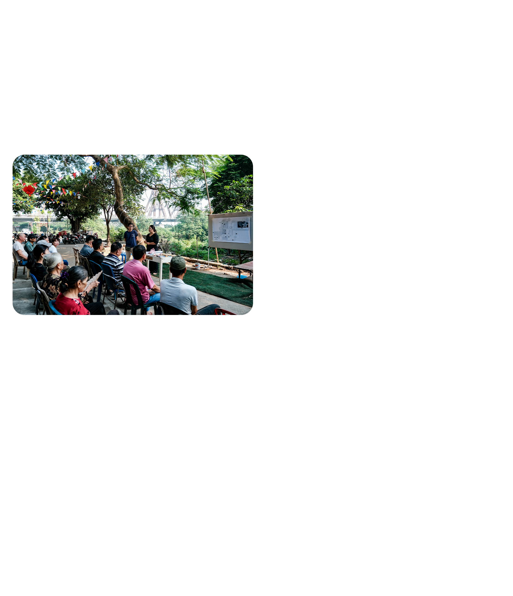
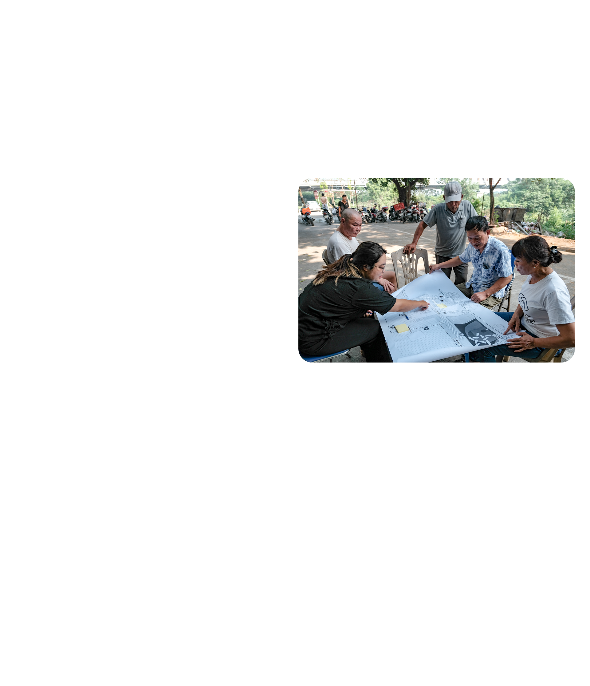
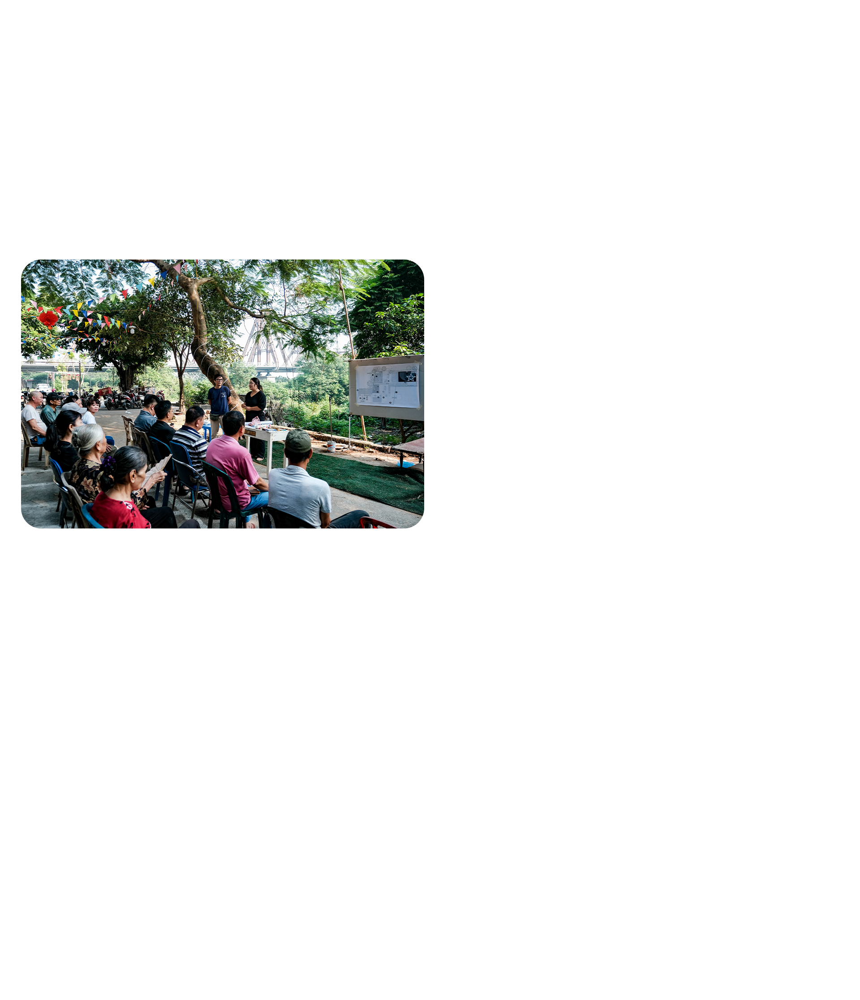
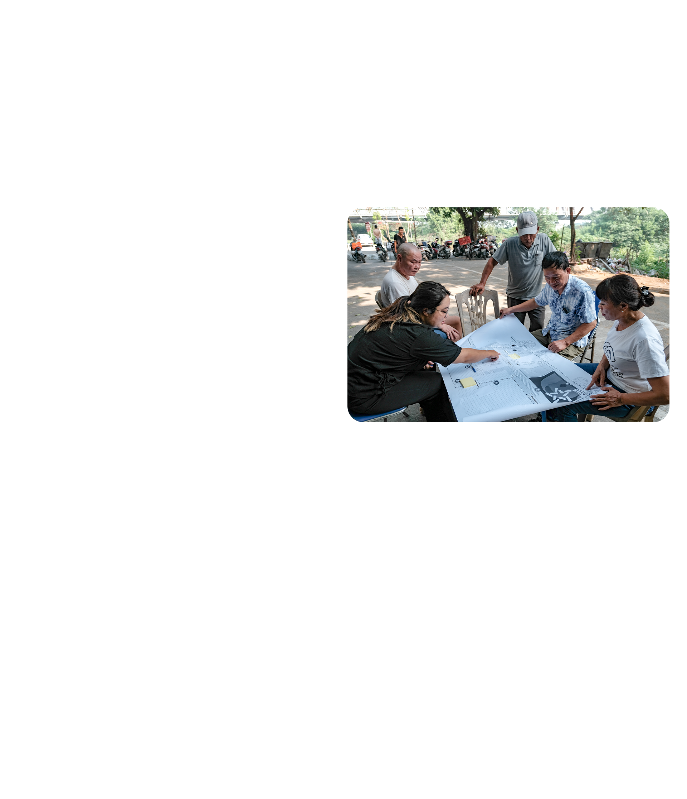
Theo đại diện đơn vị thực hiện, mô hình sử dụng các vật liệu thấm nước, tái chế tuần hoàn rác, có tính tạm thời dễ thay thế. Diện tích toàn khu vực khoảng 1000m2, được xây dựng từ nhu cầu thực tế của người dân với các tổ hợp gồm thiết bị thể dục, sân bóng rổ, cây xanh, sân chơi cho trẻ em. Khu vực dành cho người lớn có các máy tập thể dục. Những đoàn đường dốc được cải tạo theo chuẩn quốc tế để người cao tuổi, người đi xe lăn, người khiếm thị và xe nôi cho em bé thuận tiện di chuyển.
Giải pháp được thực hiện dưới sự chỉ đạo của UBND Quận Hoàn Kiếm, kết hợp với phòng Tài nguyên môi trường quận Hoàn Kiếm, UBND phường Phúc Tân, cộng đồng cư dân. Đây cũng là công trình thí điểm cho giải pháp quản lý môi trường dựa vào cộng đồng trên địa bàn quận Hoàn Kiếm. “Công viên rừng Phúc Tân được xem là một sáng kiến do nhân dân và vì nhân dân, với hy vọng sẽ mang lại những hệ quả tích cực về an sinh xã hội, an ninh trật tự, phòng cháy chữa cháy và là một cách thức hữu hiệu chống lấn chiếm bờ vở sông Hồng”, ông Trung cho biết.
Sau mười năm sống cạnh bờ vở với rác thải, giờ đây bà Lê Thị Thao cùng con, cháu và hàng chục hộ dân khác đã có một không gian sinh hoạt mới. Những em nhỏ trước đây từng làm bạn với bốn bức tường đã có nơi để cùng nhau vui chơi. “Sống ở đây chục năm nay, tôi chưa từng nghĩ có ngày mình sẽ được tập thể dục, cùng con cháu dạo mát, hóng gió ngay cạnh nhà như thế này”, bà Thao nói.
Theo kế hoạch, sau bãi rác ở Phúc Tân, HiGreen – Bình minh xanh sẽ tiếp tục triển khai những địa điểm khác ở Hà Nội, Hội An, Đà Nẵng và TP HCM. Đồng thời dự án sẽ đào tạo và chuyển giao công trình cho đại diện nòng cốt địa phương (phụ nữ, thanh niên, người cao tuổi).
“Chúng tôi kỳ vọng khi thành phố có thêm sân chơi, sẽ có nhiều đứa trẻ hạnh phúc, khỏe mạnh và vững vàng vượt qua thách thức, trở thành công dân tử tế đóng góp cho sự phát triển của đất nước", ông Vũ Thành Trung đại diện dự án cho biết.
 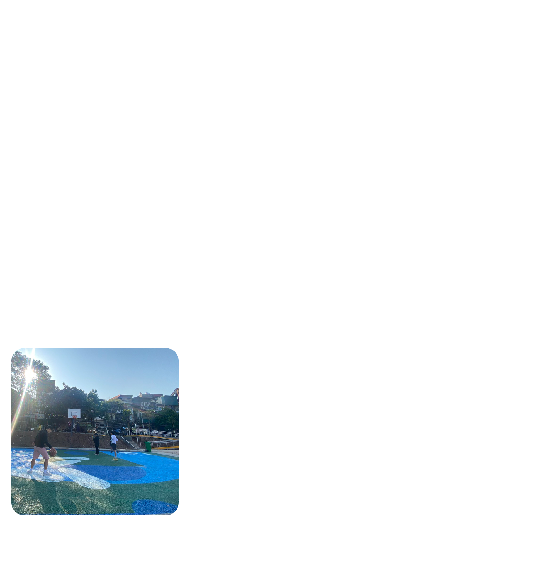
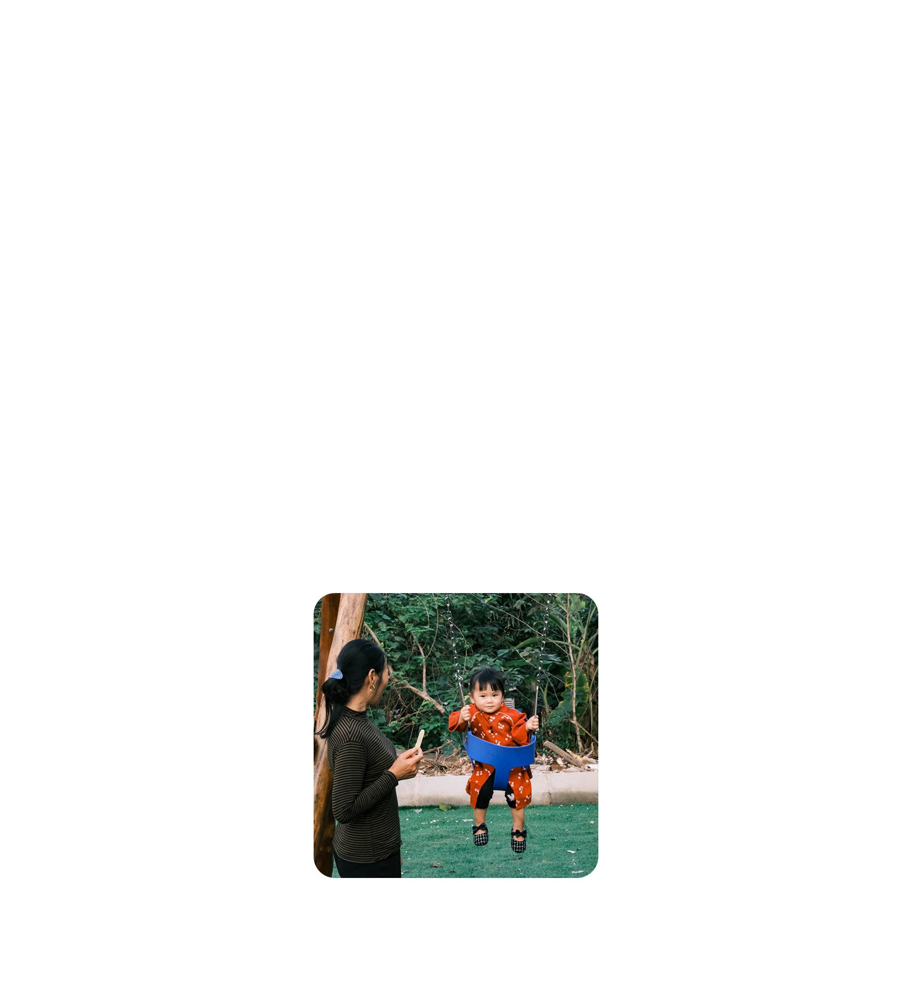
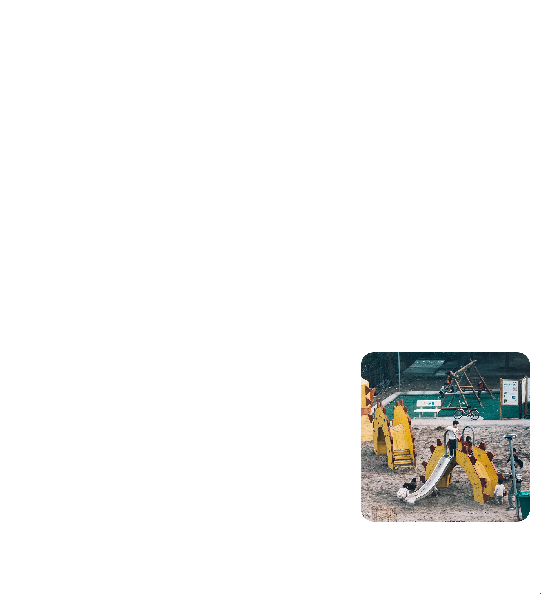
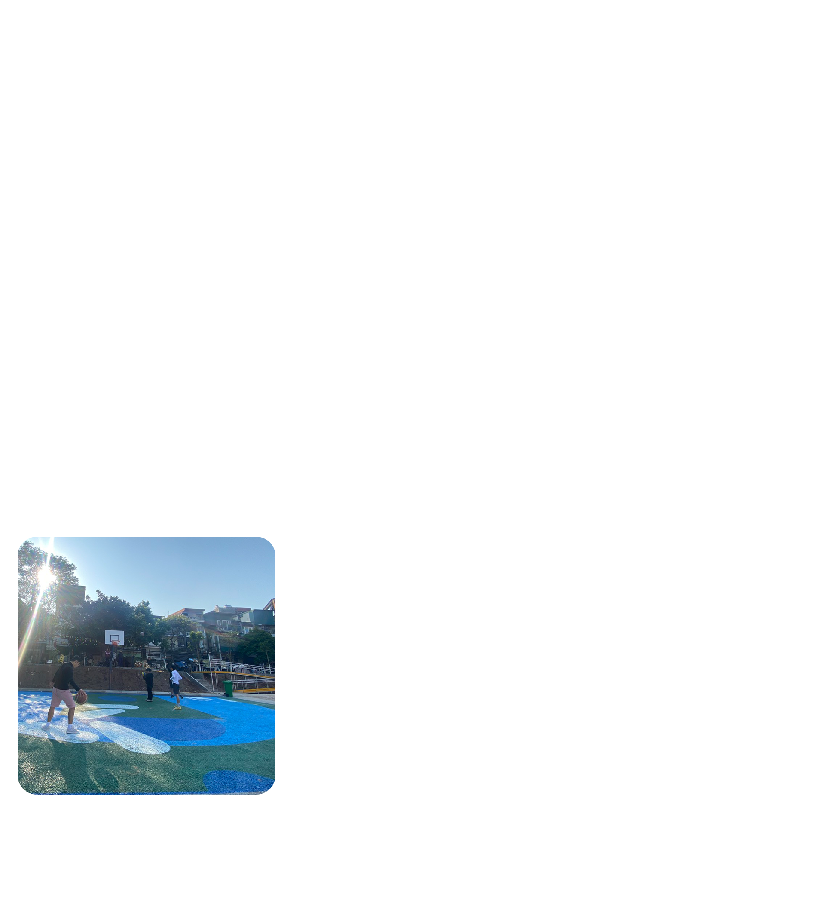
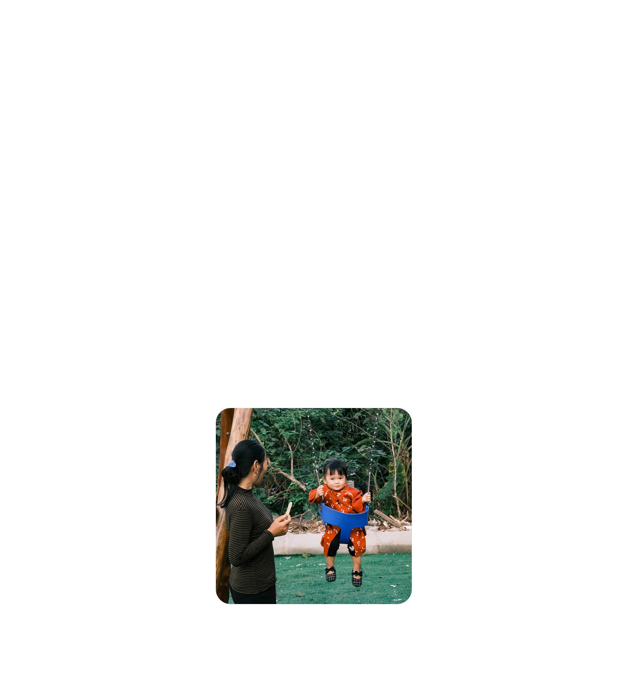
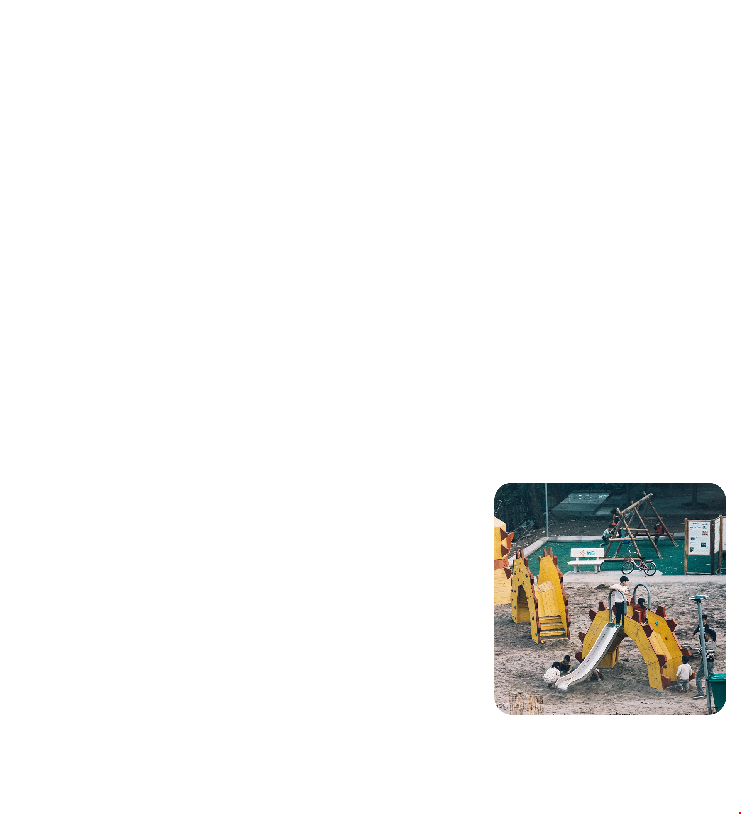